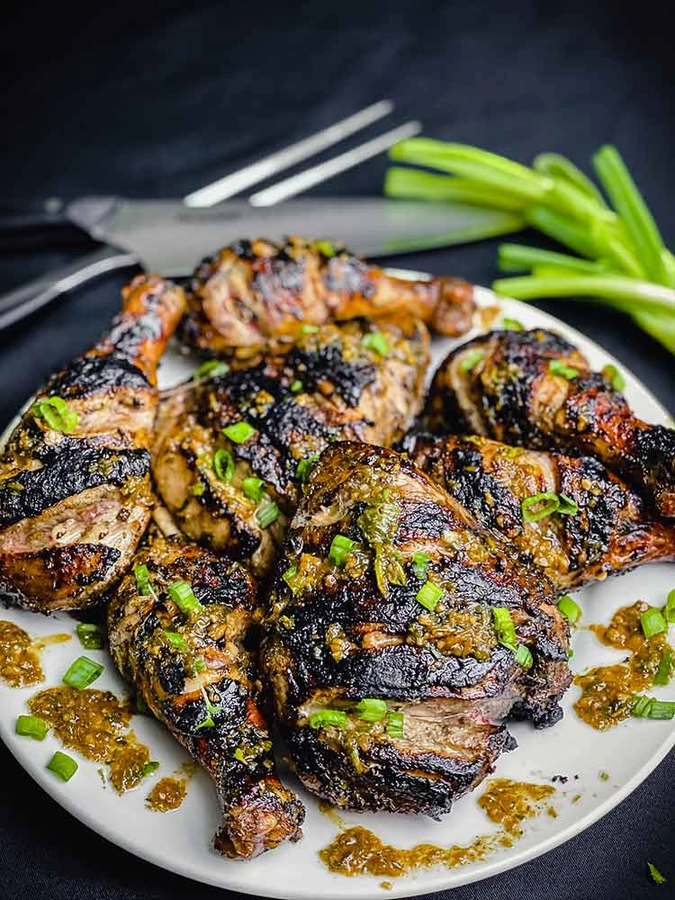

Jerk Chicken

Description
Jerk chicken is a jamaican dish first prepared by sauteeing the chicken in a special type of jerk sauce that can be home-made or brought from the grocery store. The chicken is then prepared in by either cooking it on a stovetop or baking it. The chicken is then loaded with spices that add even more colorful flavor to the dish. It tend to have a bit of spice to it but it is a great tasting dish.
Ingredients
- any type of Chicken
- Jerk sauce
- Jerk seasoning
Steps
- Clean and then sautee and spice the raw chicken as preparation before cooking it
- If preparing it on stove top bring the chicken over low heat and let cook slowly letting the marinade cook into the chicken
- Can continue to add spice to dish while cooking as one sees fit
- When chicken browns over inspect temperature and taste
- Serve, best with rice or mixed vegetables